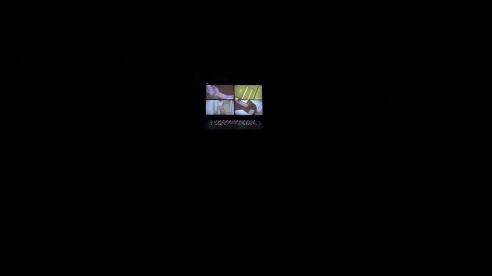
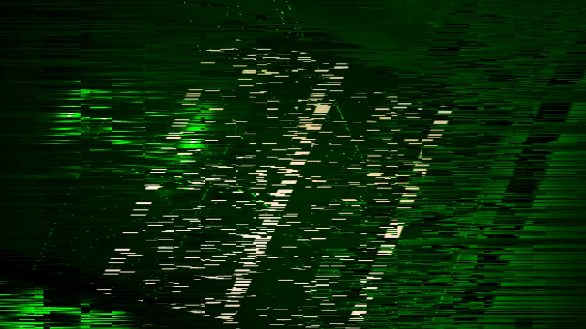

作品への興味を高めるプロモーション映像
展示会で発表する作品を事前に知ってもらい、 ゲームの世界観や内容に興味を持ってもらうことで、 実際に会場へ足を運んでもらうことを目的に制作しました。 映像を通して作品の不穏な雰囲気を印象付け、 ゲームへの期待感を高めることを意識しました。
Hiroto,s Portfolio
担当範囲：構成 / 映像編集 / モーショングラフィックス
リアル脱出ゲーム「友達がXXされた日」の プロモーション映像として制作しました。
展示会に興味を持ってもらえるよう、 作品の不穏な世界観や緊張感が伝わる映像表現を意識しました。 暗めの色調や秒針の音、シーン切り替えのテンポに 緩急をつけることで、視聴者の興味を引きつける 構成にしています。
制作目的
展示会で発表する作品を事前に知ってもらい、 ゲームの世界観や内容に興味を持ってもらうことで、 実際に会場へ足を運んでもらうことを目的に制作しました。 映像を通して作品の不穏な雰囲気を印象付け、 ゲームへの期待感を高めることを意識しました。
編集・演出

作品の不穏な世界観を伝えるため、 全体を暗めのトーンで構成しました。 また、秒針の音を取り入れることで緊張感を演出し、 シーンの切り替え速度にも緩急をつけています。
情報を一度に見せるのではなく、 あえて間を設けながら展開することで、 視聴者の興味を引きつけ、 続きが気になる映像構成を意識しました。
モーショングラフィックス

テロップアニメーションやノイズエフェクトを使用し、 作品の不安定で不穏な世界観を視覚的に表現しました。 特に喜里川理事が登場する場面ではノイズ演出を加え、 人物への違和感や不気味さを印象付けています。
また、テキストの表示タイミングや動きにも変化をつけ、 映像のテンポを損なわずに重要な情報へ 視線を誘導できるよう調整しました。